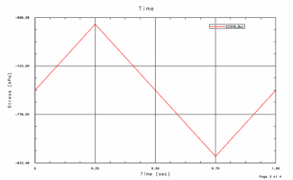
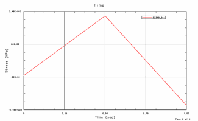
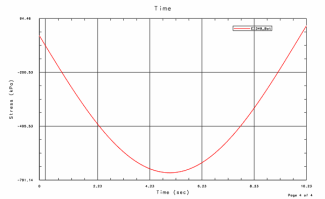

使用新建激励命令可为静态事件施加载荷变化。在创建静态事件时，可在静态耐久性事件对话框中指定激励的类型。以下激励类型可用。
载荷图样
通过将静态解子工况中的应力或应变结果乘以半个单位或完整单位周期函数和比例因子，可对循环加载条件进行仿真。也可以指定载荷偏置。

可以在载荷图样对话框中指定载荷图样设置。
结果路径
通过对使用不同比例因子的静态解子工况中的应力或应变结果进行重复，可定义加载模式。可由此启用模型谱载荷的载荷工况的准静态缩放。可以多次选择每个子工况，并且对于每个选择，您可以更改比例因子。

可在结果路径对话框中指定结果路径设置。
激励函数
通过将静态解子工况中的应力或应变结果乘以常规 AFU 表函数和比例因子，可对循环加载条件进行仿真。也可以指定载荷偏置。

可在函数对话框中指定激励函数设置。
|
应用模块 |
高级仿真 |
|
仿真导航器 |
右键单击静态事件节点→新建激励 |